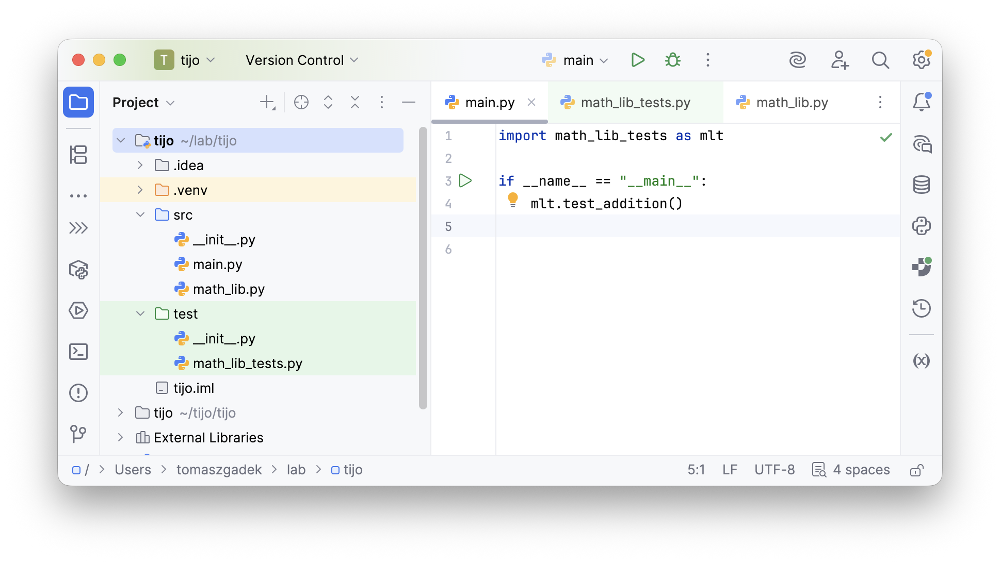

L#01: Asercja, Arrange-Act-Assert (AAA).
W trakcie tego laboratorium zapoznamy się z fundamentalnymi mechanizmami weryfikacji poprawności oprogramowania. Zrozumienie działania asercji oraz poprawnej struktury testu jest kluczowe dla tworzenia oprogramowania wysokiej jakości.
Głównym celem laboratorium jest opanowanie umiejętności pisania testów jednostkowych przy użyciu asercji oraz wdrożenie standardu Arrange-Act-Assert (AAA) aby poprawić czytelność i organizację kodu testowego.
Jest to forma zdaniowa w danym języku, która zwraca prawdę lub fałsz. Asercja wskazuje, że programista zakłada, że ów predykat jest w danym miejscu prawdziwy. W przypadku gdy predykat jest fałszywy (czyli niespełnione są warunki postawione przez programistę) asercja powoduje przerwanie wykonania programu. Asercja ma szczególne zastosowanie w trakcie testowania tworzonego oprogramowania.
Struktura asercji:
# Listing 1
result = (2 + 2) < 5
assert result, "2 + 2 nie jest mniejsze od 5. Zweryfikuj kod."
Zastosowanie asercji w praktyce:
# Listing 2
def add(first, second):
return (first + second)
if __name__ == "__main__":
assert add(1, 2) == 3, "add(1, 2) should return 3"
Postaraj się uruchomić skrypt, następnie zmodyfikuj warunek w taki sposób, aby asercja zwróciła fałsz. Obserwuj co się dzieje w terminalu.
Zaimplementuj funkcję def max(digits), która wyszuka największy element z kolekcji liczb całkowitych (digits). Zaproponuj dobre testy / asercje:
Arrange-Act-Assert (AAA) to technika opisu testów, która pomaga w tworzeniu klarownych, czytelnych i zrozumiałych przypadków testowych. Jest to często stosowany format, który ułatwia organizację testów poprzez podział na trzy etapy: przygotowanie warunków początkowych (Arrange), wykonanie testowanej operacji (Act) oraz weryfikację oczekiwanych rezultatów (Assert).
Zastosowanie Arrange-Act-Assert w praktyce:
# Listing 3
def add(first, second):
return first + second
def test_addition():
# Arrange
first_number = 1
second_number = 2
# Act
result = add(first_number, second_number)
# Assert
assert result == 3, "add(1, 2) should return 3"
Podziel swój kod z poprzedniego zadania na kod produkcyjny (lokalizacja src) i testowy (lokalizacja test). Asercje powinny znaleźć się w oddzielnych funkcjach (jedna asercja na funkcję) oraz powinny być zapisane zgodnie z konwencją Arrange-Act-Assert.

Zaimplementuj funkcję def is_pesel_correct(pesel_digits: list[int]), która zweryfikuje, czy podany numer PESEL jest poprawny. Zaproponuj dobre testy. Zastosuj poznane zagadnienia podczas laboratorium.
Podczas tych zajęć omówiliśmy pojęcie asercji jako narzędzia do przerywania programu w przypadku niespełnienia założeń logicznych. Nauczyliśmy się również, jak dzielić test na trzy logiczne fazy (AAA), co znacząco ułatwia późniejszą konserwację i analizę błędów w kodzie.
Powrót do strony głównej